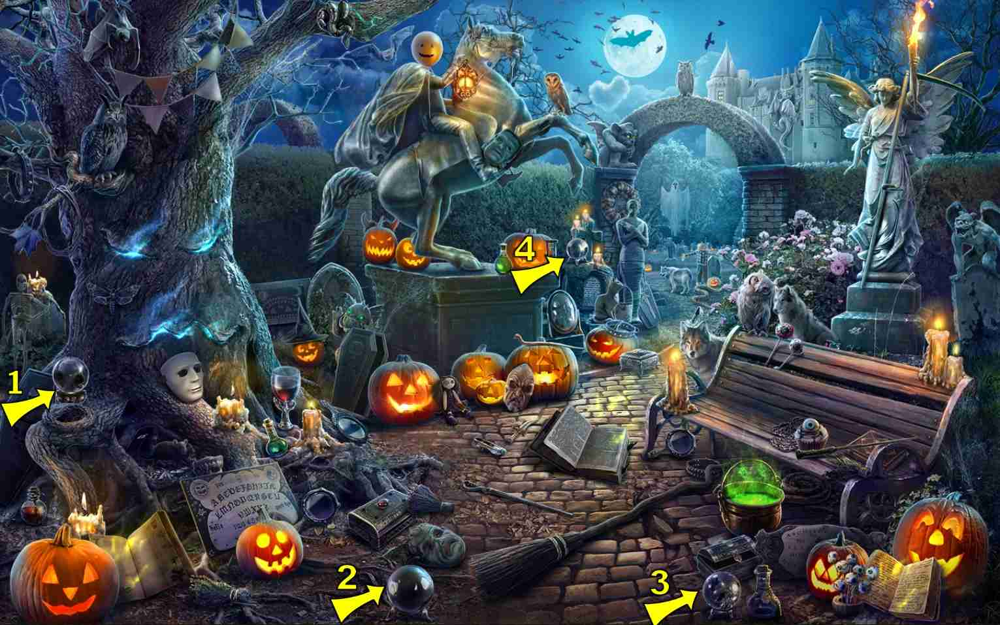
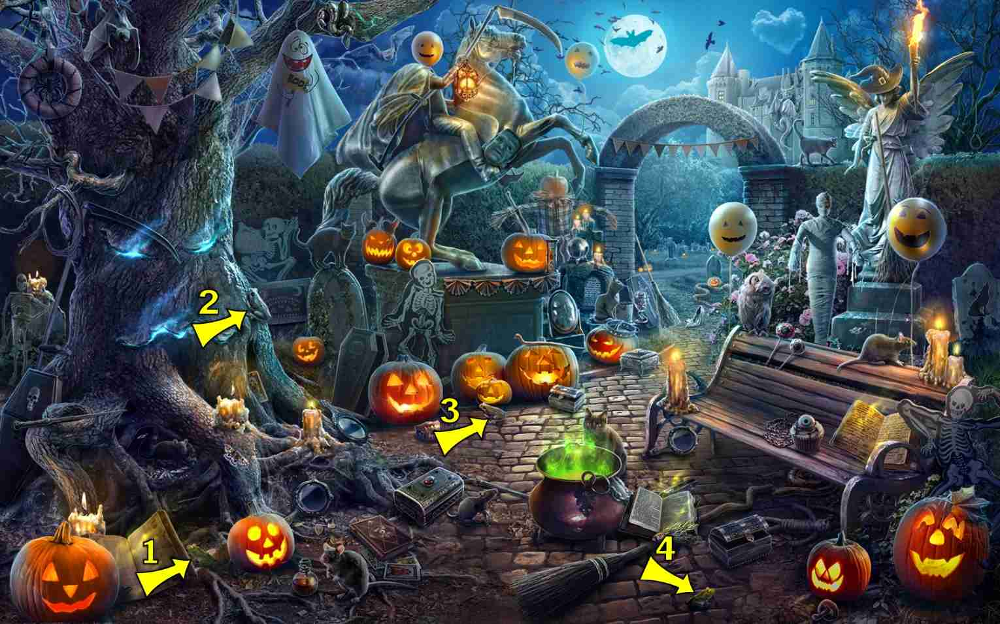
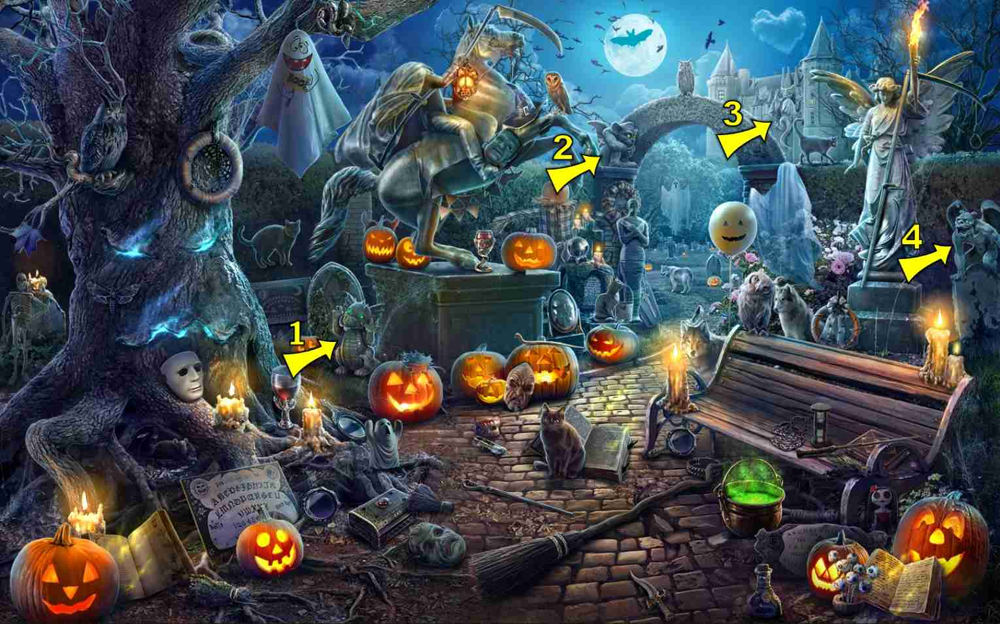

4 items:
Formerly Horns
- Demon horns above angel statue
- Demon horns above right pillar of stone arch
2 items:
- Right bottom corner on the stones left of skull
- Right tree, behind chain.
4 items:
- Middle of foreground on the cobblestones( as a white directional arrow)
- Top of right pillar of gate (directional arrow)
- Middle of tree - just below the "eye" (directional arrow)
- Below the top front edge of the horse pedestal
3 items:
Wrapped in paper
- Sitting on bench on right side
- On the left lower foreground, at the base of the tree where the jewelry box and ghost are
- On the right side on ground in front of bench
4 items:
4 items:
- Under bench (sometimes under end of broom)
- Lower left corner, just above pumpkin (one card)
5 items:
- Behind cauldron, center screen
4 items:
- On top of gravestone right of horse statue

4 items:
- Sitting on the horse statue
5 items:
- On the book to the right of cauldron, lower middle of scene
- On cobbles in front of pumpkin straight line from left corner of state, behind ghost if present


4 items:
- Carved into the back of the bench
4 items:

4 items:
- On the tree trunk left side
- Upper right of tree branches
4 items:
- On the ground at base of right column archway or pillar of gate
4 items:
- On base of angel statue on right
- On hind quarter of horse
- On base of horse statue
- On tombstone on far right
6 items:
- Lower right, next to the two pumpkins
5 items:
- Center near the book front of three pumpkins
5 items:
- Between horse statue and tree
4 items:
- On 2nd from left tree branch high in large tree
4 items:
- Sitting in the middle of the bench
- Far right of graves to right of horse statue, almost on the path